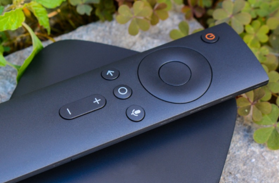
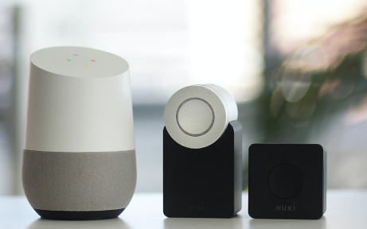

Smart home is no more a luxury, it’s now become a necessity. Home automation gives you access to control devices in your home from a mobile device anywhere in the world.
The USP of this product is that OTT Set Top Box solution converts any non-smart TV into a Smart TV in 80X40X20 mm form factor. Based on Amlogic Am905x SoC (System on Chip) and it has 2 GB LPDDR4 RAM Like every other smart home device it takes Wi-Fi or Ethernet as input and provides HDMI output which connects to your TV. This powerful solution can also do 4K Video Playback.
We have also added the option of Voice Command too apart from IR or Bluetooth based remotes. Hybrid Set Top Box is also available which can take Satellite TV Input or Wi-Fi/Ethernet input. Set Top Box Design Services are available now under Votarytech’s Virtual ODM methodology.


Smart home is no more a luxury, it’s now become a necessity. Home automation gives you access to control devices in your home from a mobile device anywhere in the world. Where home automation becomes truly “smart” is in the Internet-enabled devices that attach to this network and control it.
Votarytech’s unique Home Automation solution combines Home Automation with Set Top Box, Home Security and Home Wellness requirements of a Smart home in a single box! Using this solution, all devices and appliances in home can be controlled by an App on your phone, You can watch entertainment channels using the same App and you normal TV and it can also be used as Home Security in night and when you are not in your home using the same App.